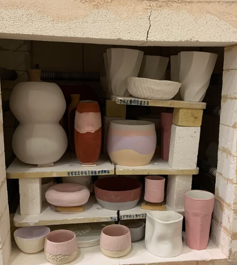

Manifestomuz
Kaju’dan ilham alan bir seramik atölyesi.
Caju Clay’i bir mimar olarak, köpeğim Kaju’dan ilham alarak kurdum. Günlük hayatta kullandığımız objelerin de özenle tasarlanmayı hak ettiğine inanıyorum. Küçük atölyemde günlük kullanıma uygun, işlevsel ve dekoratif seramikler üretiyorum.
Her ürün atölyemde tek tek tasarlanır, elde şekillendirilir ve 1200°C’de stoneware olarak pişirilir. Üretim sürecinin her aşaması özenle tamamlanır; bu nedenle her parça kendine özgü dokuya, sır geçişlerine ve karaktere sahiptir.
Amacım yalnızca bir seramik üretmek değil, uzun yıllar keyifle kullanılacak, günlük hayatın doğal bir parçası olacak zamansız ürünler tasarlamaktır.
Caju Clay’de her ürün tek tek üretilir; seri üretim değildir.
—— Ceyda Erten, Kurucu
100%Doğal Çamur
TekEşsiz Tasarımlar
01
Her Parçanın Kendine Özgü Karakteri
Her parçayı tek tek elde şekillendiriyoruz. Çamurun dokusu ve pişirimde oluşan sır geçişleri, her ürüne kendine özgü bir görünüm kazandırıyor.
02
Yavaş Yaşam & Ritüel
Sabah kahvesi veya akşam çayı içtiğiniz kupanın elinizde bıraktığı doku, sizi anın içine ve dinginliğe davet eden bir köprüdür.
03
Sürdürülebilir Doğallık
Kimyasal katkısız doğal killer, kurşunsuz gıda uyumlu mineraller ve nesiller boyu kırılmadan kalacak taş fırınlaması uyguluyoruz.
Atölye Ruhu
“Her fırınlama bir sürpriz barındırır.”
Fırının kapağını açtığımız her sabah, çamurun kimyası ve yüksek ısının dansına tanıklık ederiz. Sırın yüzeydeki akışı, toprağın rengiyle kurduğu diyalog her defasında tekrarlanamaz bir mucizedir.
Bu sebeple sahip olduğunuz her CAJU CLAY parçası dünyada yalnızca bir adettir; sizin hikayenize eşlik etmek üzere doğmuştur.
Aşama Aşama
Seramiğin sabır gerektiren 4 durağı.
 01
01
Yoğurma ve Hazırlık
Çamurun içindeki hava kabarcıkları dövülerek tamamen alınır. Kıvamı tornaya uygun elastikiyete gelene kadar sabırla yoğrulur. En ufak bir hava tanesi bile fırında eserin çatlamasına yol açabileceğinden ilk adım büyük titizlik ister.
 02
02
Tasarım ve Şekillendirme
Her parça bir fikirle başlar. Ürünleri Caju Clay atölyesinde tasarlıyor ve tek tek elde şekillendiriyoruz. Bu süreç her parçanın kendine özgü karakterini koruyor.
 03
03
Yavaş Kurutma
Formunu kazanan seramikler asla aceleye getirilmez. Direkt güneş ışığından uzak, stüdyonun serin raflarında 7–10 gün boyunca gölgede çok yavaş kurumaya bırakılır. Doğal bir sabır sınavıdır.

04
Fırın ve Sırlama
İlk pişirimin ardından sırları uyguluyor ve seramikleri 1200°C’de yeniden pişiriyoruz.
Teknik & Detay
1200°C’de stoneware pişirim
Stoneware ürünlerimizi 1200°C’de pişiriyoruz. Bu sıcaklık, seramiğe günlük kullanıma uygun dayanıklılık kazandırıyor.
Sırlar yüksek sıcaklıkta doğal tepkimeler verir. Bu nedenle renk geçişleri ve dokular her üründe farklılık gösterir.
950°CBisküvi Pişirimi
1200°CSır Pişirimi